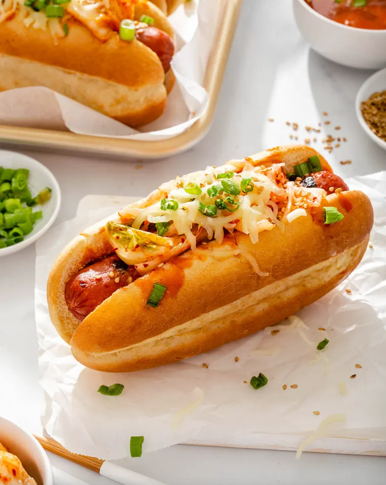
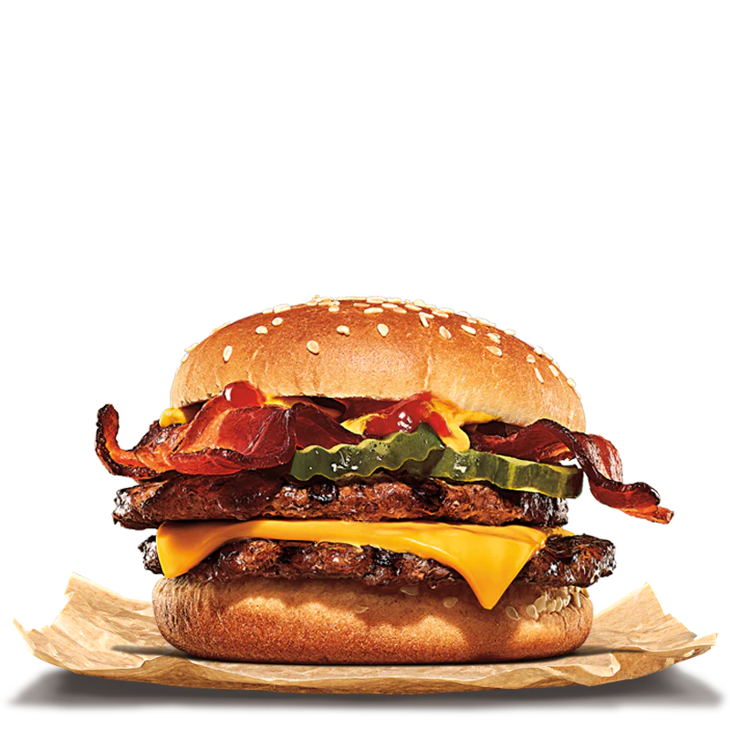
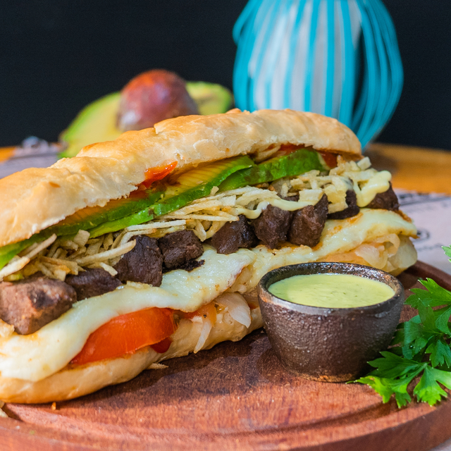
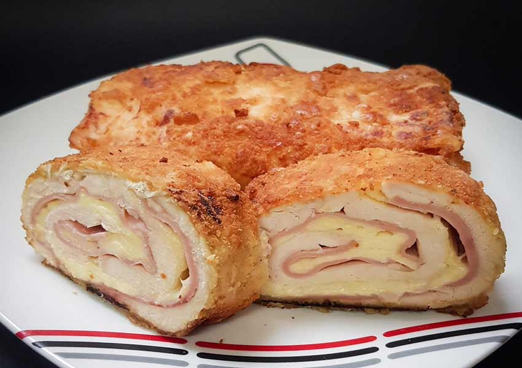

Nuestras Comidas Destacadas
Perro

Se sirve en un pan suave y esponjoso relleno de
una sabrosa salchicha, acompañada de repollo rallado, mayonesa,
kétchup, mostaza y papas fritas. Una explosión
de sabor y textura que conquista el paladar. ¡Irresistible!
Hamburguesa

Una jugosa carne a la parrilla, acompañada de sabrosa salsa rosada,
queso derretido y crujientes papitas. Todo envuelto en un suave pan
de hamburguesa. Una explosión de sabor que te dejará encantado.
¡Una experiencia gastronómica venezolana imprescindible!
Pepito

El pepito venezolano es un delicioso sándwich relleno de jugosa carne
de res o pollo, acompañada de sabrosas tiras de jamón y queso derretido.
Todo se sirve dentro de un pan suave y crujiente, y se complementa con
vegetales frescos y salsas exquisitas.
Un manjar que despierta los sentidos.
Enrrollado

El enrollado venezolano es una delicia culinaria que
combina sabores tradicionales. Consiste en una masa
de maíz rellena de jugosa carne desmechada, aderezada
con especias y guisos típicos de Venezuela.
Su textura suave y su sabor exquisito hacen
de este plato una experiencia única para el paladar.